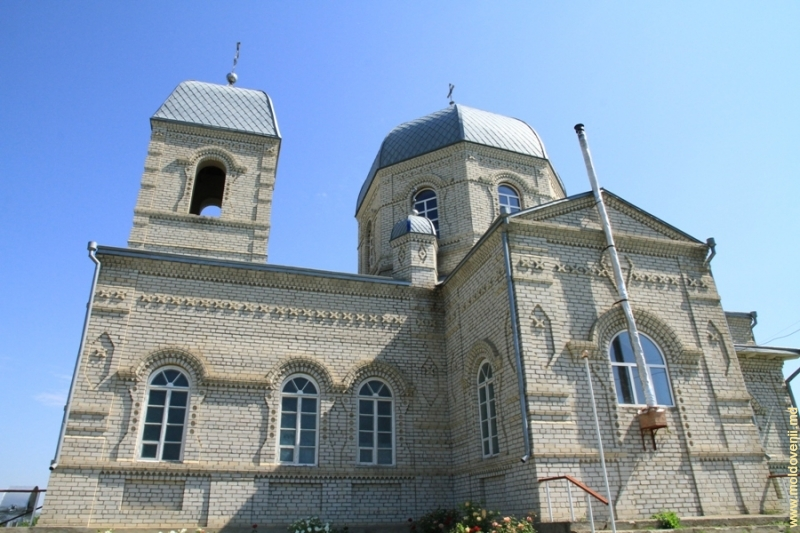
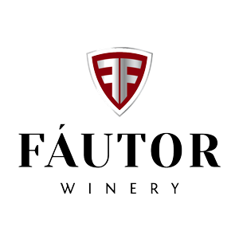
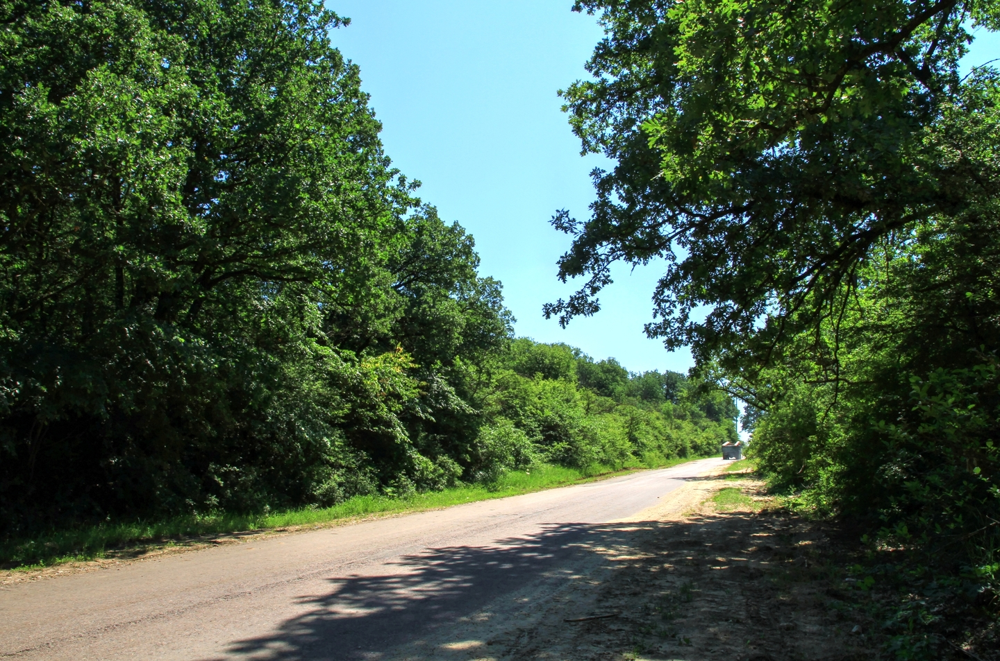

Locuri turistice din localitate
Muzeul de Istorie și Etnografie

Fondat în 1981, Muzeul de Istorie și Etnografie de la Tigheci (director, Ion Pușcașu) e una din cele mai prestigioase instituții muzeistice din Republica Moldova, a primit zeci de mii de vizitatori de-a lungul anilor, nimeni nu-i pune la îndoială semnificația patrimonială, are o bogată colecție alcătuită din peste 2000 de exponate, dar până în prezent nu are un sediu pe măsură. Conoscutul muzeograf Varvara Buzilă a declarat pentru Jurnal de Chișinău: ”Muzeul din Tigheci e foarte original. Localnicii se identifică cu această instituție. Au foarte multe piese valoroase. Din nefericire, însă, au un spațiu mic, iar susținere de la autorități – minoră sau deloc”.
Biserica "Sfântul Nicolae"
Biserica “Sfântul Nicolae” din satul Tigheci a fost ridicată din lemn în anul 1794. În anul 1829 a fost reconstruită din cărămidă albă, în formă de cruce, avînd două cupole mari şi patru mici. În biserică există icoane vechi, din secolul al XVIII-lea. În ograda bisericii se află mormintele ctitorilor, boierilor din familia Buiucliu. Familia Buiucliu era de origine armenească, dar perfect integrată protipendadei moldoveneşti a secolului al XIX-lea, implicată intens în activitatea negustorească și beneficiind de alianţe matrimoniale cu familii boiereşti locale. Buiucliii au devenit boieri cu dregătoriiț Moldova. Familia Buicliu este îngropată pe teritoriul bisericii, mormintele fiind îngrijite de locuitorii satului. În codrii din preajma satului Tigheci există un loc numit „Cetăţuia Cociulia”, unde pe timpuri a existat o cetate geto - dacică. Muzeul satului se află în incinta conacului boierului Buicliu, construit la începutul secolului al XIX-lea. Muzeul satului este vizitat anual de circa 1700 de excursionişti, atît din ţară cît şi de peste hotare. Muzeul are două compartimente: de istorie şi etnografie; dispune de o bogată colecţie de obiecte vechi, circa 2000 de exponate.
Fabrica de Vin "Fautor"
Compania de familie Fautor a fost fondată la sfârşitul secolului XX. Calea parcursă de la începuturi până azi a fost marcată de performanțe și distincţii, iar la baza succesului a stat experienţa şi entuziasmul membrilor familiei, cât şi talentul vinificatorului. În 2003-2006 au fost implementate tehnologii avansate și plantați butași de viță-de-vie, pentru ca astăzi podgoriile vinăriei să se extindă pe un areal de cca. 350 ha. Atât vinăria, cât şi plantaţiile sunt amplasate în microzona Tigheci, făcând parte din zona viti-vinicolă „Valul lui Traian” la Sudul Moldovei. Microzona Tigheci este una absolut unică, fiind foarte reuşită pentru producerea vinurilor de calitate atât albe, cât şi roşii. Denumirea „Fautor” își trage originea din limba latină şi semnifică „creator, autor”, purtând semnificatia unei responsabilități maxime pentru calitate și abordarea personalizată a vinificatorului.
Codrii Tigheci
Pe o hartă din 1785, tipărită în Nürnberg, Codrii Tigheci erau documentați ca fiind cu mult mai mari decât în prezent: pădurea mărginea la nord cu râul Strîmba, la vest cu râul Prut, iar la vest cu Stepa Bugeacului. Inginerul D. Stănescu indica, pe o hartă din 1869, că pădurea continua la sud înconjurând satele Slobozia, Colibași, Brînza și Văleni, atingând malurile Dunării la Giurgiulești. În Descriptio Moldaviae, Dimitrie Cantemir remarca că Codrii Tigheci sunt atât de denși, încât ei nu puteau fi traversați decât de cei care cunoșteau bine drumurile și cărările. Legenda spune că în acești codri a crescut Petru Rareș, fiul lui Ștefan cel Mare. Pădurea se întinde pe versanți abrupți de tipul codrilor. Pe teritoriul ei se găsește cel mai înalt punct din partea de sud a Moldovei, 301 m. Predomină gorunul și carpenul, cu un amestec neînsemnat de tei, frasin, arțar și jugastru. Rezervația include, în zona de sud, o pădure bine păstrată de stejar pedunculat cu amestec de stejar pufos. Prin poieni se întâlnesc mezofite, cât și multe plante rare tipice zonei balcano-mediteraneene: rușcuța, brăndușa, albăstrița Angelescu, ghiocelul, dedițelul negriscent, celnușa gălburie etc.